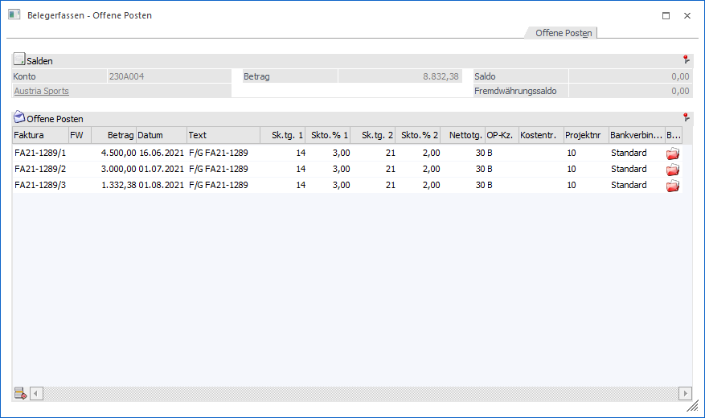
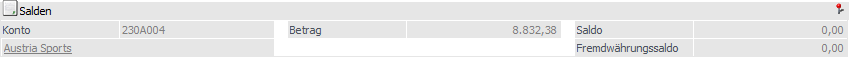
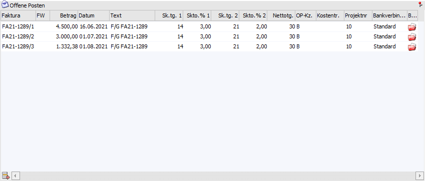
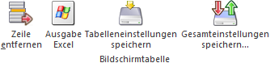

Im Zuge des Fakturendrucks gibt es die Möglichkeit Änderungen bezüglich der Offenen Posten, die in die WinLine FIBU übergeben werden, vorzunehmen (z.B. Splittung, Fälligkeitsanpassung, etc.). Hierzu muss im Bereich "Speichern" der Belegerfassung das Register "Offene Posten" angewählt werden.
Hinweis
Die Anwahl des Registers steht nur zur Verfügung, wenn es sich um eine Faktura handelt. Des Weiteren wird die Faktura bei Anwahl automatisch gerechnet!

Salden

Ø Konto
An dieser Stelle wird die Nummer des Hauptkontos (WinLine START - Parameter - FAKT-Parameter - Belege - Allgemein - Option "Hauptkonto für Belege") des aktuellen Belegs angezeigt.
Ø Name
An dieser Stelle wird der Kontoname der Kontonummer dargestellt und das Fenster Kontoinformation kann direkt geöffnet werden.
Ø Betrag
An dieser Stelle wird der Gesamtbetrag der Faktura angezeigt
Ø Saldo
Hier wird der noch offene (d.h. nicht verteilte / zugewiesene) Fakturenbetrag angezeigt.
Ø Fremdwährungssaldo
Hier wird der noch offene (d.h. nicht verteilte / zugewiesene) Fakturenbetrag gemäß Fremdwährung angezeigt.
Tabelle "Offene Posten"

Mit Hilfe der Tabelle "Offene Posten" können die Änderungen am Offenen Posten vorgenommen werden.
Ø Faktura
Die Rechnungsnummer wird vorgeschlagen und kann ggf. geändert werden. Es können auch mehrere Teilfakturen erzeugt werden - diese müssen allerdings unterschiedliche Fakturennummern haben.
Ø Betrag
An dieser Stelle erfolgt die Eingabe des Fakturenbetrages.
Ø Datum
In dieser Spalte steht das Valutadatum zur Verfügung.
Ø Text
Hier wird der Buchungstext vorgeschlagen, der aufgrund der Einstellungen der Belegart generiert wurde. Der Text kann überschrieben werden.
Ø Zahlungskonditionen
Hier werden die im Beleg hinterlegten Zahlungskonditionen angezeigt, die manuell verändert werden können.
Ø OP-KZ
Hier wird das OP-Kennzeichen vorgeschlagen, das aus dem Beleg übernommen wurde.
Ø Kostenträger
Hier kann ein Kostenträger eingetragen werden, der mit der Offenen Post in die Finanzbuchhaltung übergeben wird.
Ø Projektnummer
Hier wird die Projektnummer aus dem Beleg vorgeschlagen und kann bei Bedarf verändert werden.
Ø Bankverbindung / Bankverbindung suchen
Im Feld "Bankverbindung" wird die Bezeichnung jener Bankverbindungen angezeigt, die dem Offenen Posten zugewiesen wird. Eine Änderung der Zuweisung kann über das Feld "Bankverbindung suchen" erfolgen.
Tabellenbuttons

Ø Zeile entfernen
Durch Anklicken des Buttons "Zeile entfernen" wird die gerade aktive Zeile aus der Tabelle gelöscht.
Ø Ausgabe Excel
Durch Anwahl des Buttons "Ausgabe Excel" wird der Inhalt der Tabelle nach Microsoft Excel übergeben.
Ø Tabelleneinstellungen speichern
Die Spalten einer Tabelle können grundsätzlich an beliebige Positionen verschoben, bzw. in der Breite entsprechend angepasst werden. Durch Anwahl des Buttons "Tabelleneinstellungen speichern" werden die Einstellungen benutzerspezifisch gespeichert und bei dem nächsten Aufruf des Programmpunktes wieder vorgeschlagen.
Ø Gesamteinstellungen speichern…
Im Gegensatz zu "Tabelleneinstellungen speichern" können mit "Gesamteinstellungen speichern" mehrere Tabellenaufbauten gespeichert und nach Wunsch geladen werden. Zusätzlich werden Sonderfunktionen der Tabelle (z.B. "Spalte gruppieren") ebenfalls bei der Speicherung bedacht.
Buttons
Ø Ok
Durch Drücken des Buttons "Ok" bzw. der Taste F5 werden die Eingaben gespeichert.
Achtung
Eine Speicherung ist nur möglich, wenn es keinen aufzuteilenden Betrag mehr gibt (d.h. Saldo = 0,00).
Ø Ende
Durch Drücken des Buttons "Ende" bzw. der Taste ESC wird das Fenster geschlossen und alle durchgeführten Änderungen verworfen.